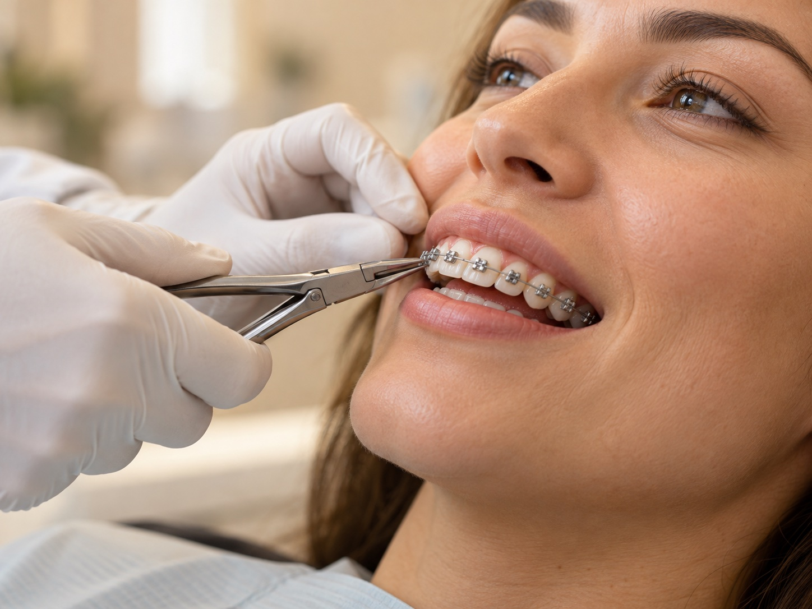
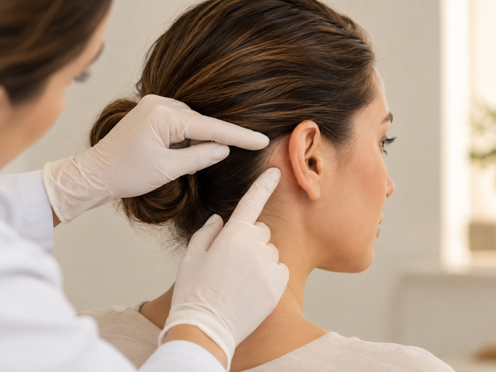
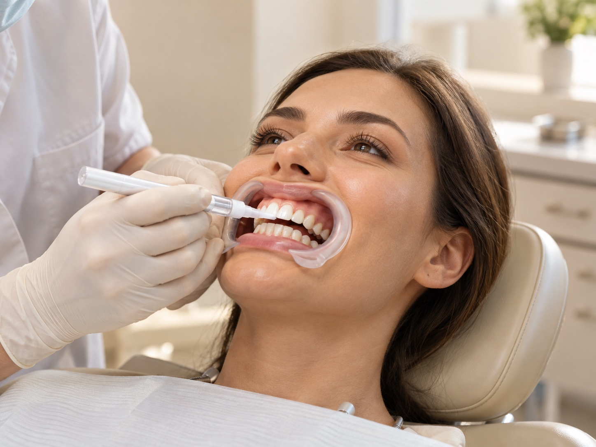
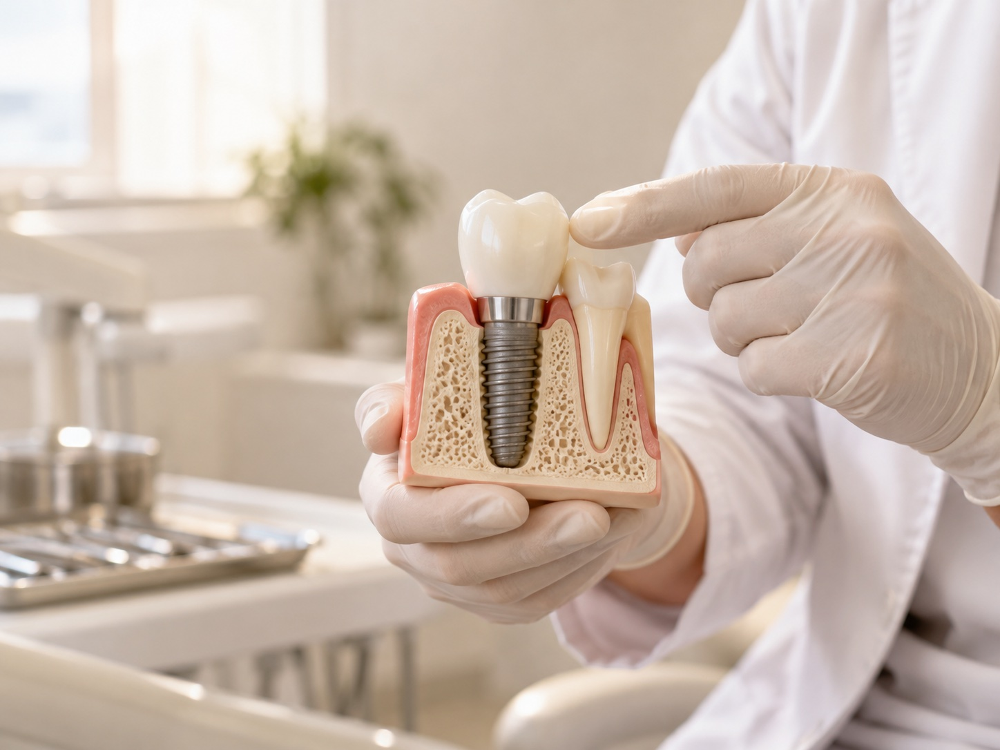

Odontologia
Tratamento ortodôntico
Um sorriso alinhado, com cuidado em cada etapa.
Conheça o tratamentoProcedimento cirúrgico com avaliação individual.

Cirurgia de orelha (otoplastia) integra os procedimentos apresentados pela Clínica BZ em parceria com o Dr. André Mendes (CRO/SP 120991), especialista em Cirurgia Bucomaxilofacial.
Agende sua avaliação na Cidade Dutra. A equipe está à disposição para explicar o atendimento e responder às suas dúvidas.
Agendar avaliaçãoDra. Bruna Zivolo · CRO 125187

Um sorriso alinhado, com cuidado em cada etapa.
Conheça o tratamento
Estética dental para valorizar o seu sorriso.
Conheça o tratamento
Atenção à saúde, à função e à estética do sorriso.
Conheça o tratamento